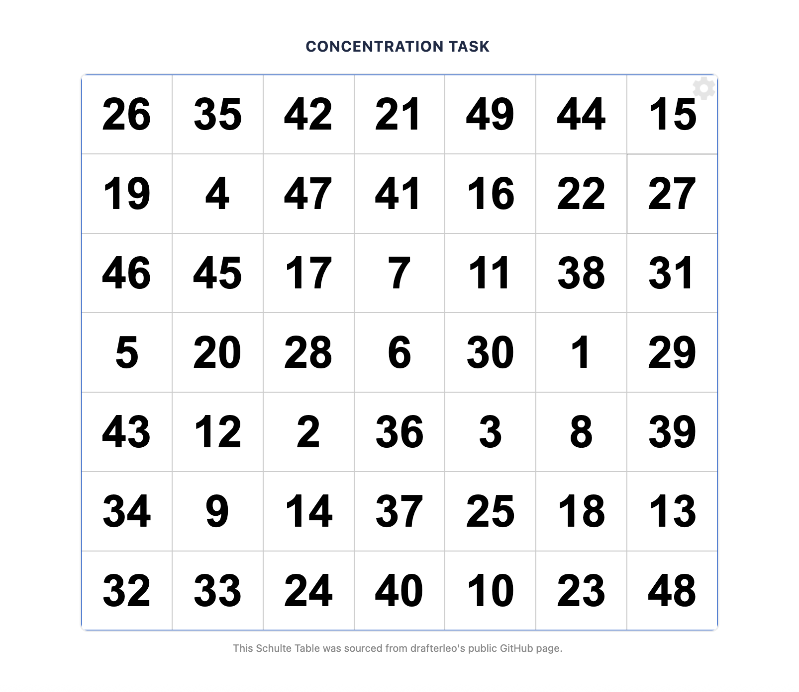
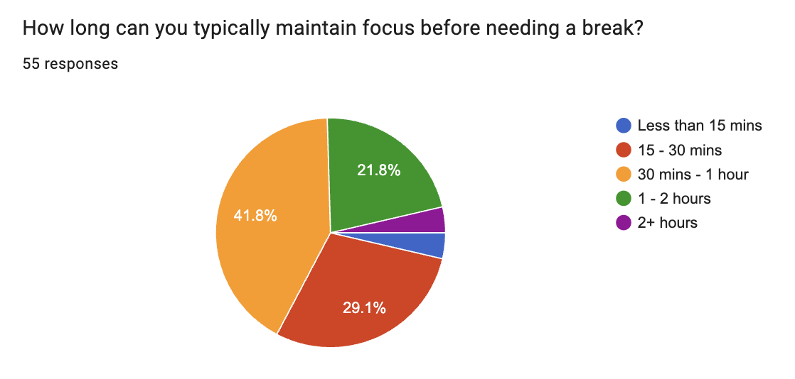
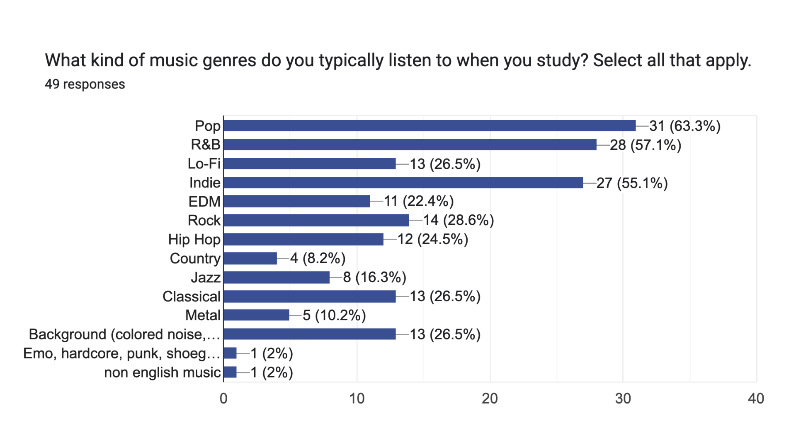
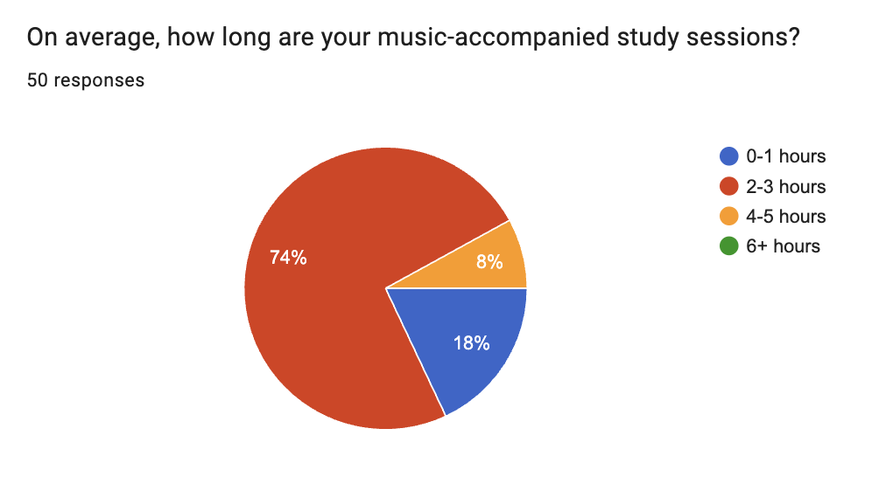
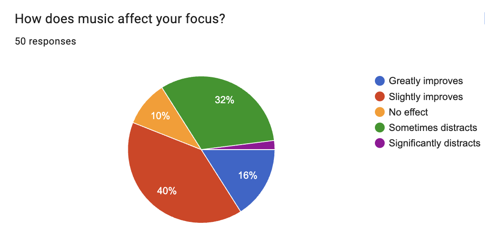
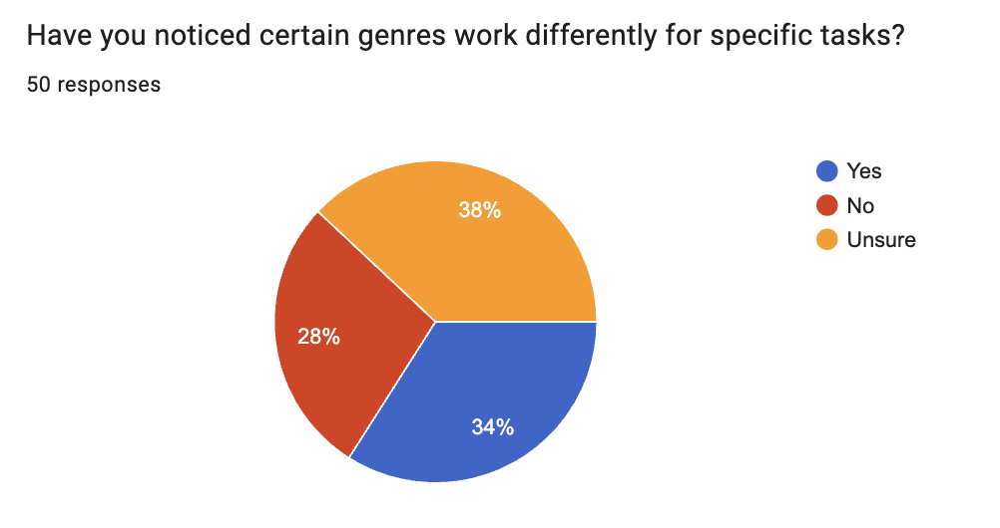
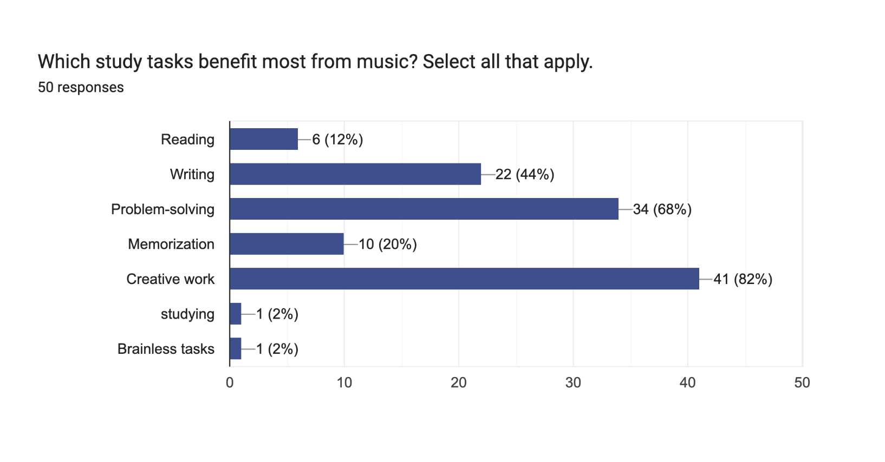

Purpose
Our Study
As part of a joint Public Health and Informatics initiative at UC Irvine, we are investigating the intersection of digital media and focus, particularly in relation to college students.
Modern academic environments are increasingly defined by digital fragmentation, where constant exposure to short-form media and AI-assisted tools consistently challenges a student's ability to maintain "deep work" focus. While many students turn to music as a cognitive anchor to combat these distractions, existing literature remains largely confined to the benefits of traditional classical or instrumental genres.
This study bridges that gap by investigating how a diverse array of contemporary auditory environments—ranging from high-tempo EDM to lyrical Pop—directly impacts cognitive endurance and attention maintenance among the UC Irvine student population.
The Problem: Cognitive Fragmentation
In the digital landscape, the rise of "snackable" content has created a state of fragmented attention. We are investigating how constant context-switching makes student concentration increasingly fragile during high-stakes academic tasks.
Our Objective
By measuring performance against six distinct auditory variables, we aim to design evidence-based habits that help students rebuild focus through intentional music selection.
Participate
Baseline Survey
Provide information about your musical background and habits.
Pre-Study Survey →Methodology
Research Protocol
Phase I: Preliminary Population Study
To establish a baseline for contemporary student habits, we conducted an initial cross-sectional
survey that garnered 55 responses. Our goal was to establish the current music-listening habits of college students.
Questions centered on existing musib prefreences and habits, observed study and focus patterns, and identifying
potential participants for our experimental study discussed in Phase II.
This data allowed us to determine the specific musical genres utilized in the experimental phase.
Phase II: Experimental Design & Research Suite
We developed a custom-coded testing environment to ensure standardized data collection. The experiment consists of six distinct trials designed to measure focus amidst various auditory environments. Leveraging the testing suite, our team conducted 19 in-person, one-on-one testing sessions.
The Schulte Grid Task: Participants are presented with a 7x7 grid of randomized numbers. They are asked to locate numbers 1 through 49 in ascending order as quickly as possible. This task measures mental speed and visual search efficiency.
Genres: These were the genres we selected for each round, including our "Silence" control group.
- Control: Silence
- Pop: High Popularity
- Country: Low Popularity
- EDM: Median Popularity
- Classical: Historical Benchmark
- Preferred: Participant Choice

Testing Tool: 7x7 Randomized Schulte GridData Collection & Metrics
For each round, we captured three primary data points to analyze cognitive load and performance:
Research Testing Suite
To minimize external variables, we engineered a specialized web-based research suite. This platform automates the rotation of auditory environments while tracking sub-second response times, ensuring high data fidelity across different browsers.
Results & Analysis
Initial Survey Insights
Before the experimental phase, we surveyed 55 college students to bridge the gap between their perceived focus habits and their actual auditory choices. The results confirmed that while students rely on music to sustain multi-hour study sessions, their preference for lyrical genres often directly competes with the high cognitive load required for academic reading and comprehension.

Focus Habits
A majority of students, 70.3%, report only being able to focus for less than 1 hour before needing a break.

Popular Genres
Pop is the most popular (63.3%), followed closely by R&B and Indie.

Session Endurance
When studying with music, a significant 74% of students report their sessions typically last 2-3 hours.

Perceived Focus Impact
56% of students report that music improves concentration, while 34% acknowledge it can be a source of distraction.

Genre-Task Specificity
34% of students notice different genres work better for specific tasks.

Task-Specific Benefits
Music is most heavily utilized for creative work (82%) and problem-solving (68%).
Experimental Insights
Our experimental phase tested the limits of student focus by measuring performance against different auditory variables. The data confirmed a clear "Lyric Tax," where verbal processing of songs competes for cognitive resources, while also revealing a significant "BPM Advantage" where high-tempo, instrumental tracks act as a rhythmic anchor to increase visual search speed.
Objective Performance Trends
EDM and Classical emerged as the strongest performers objectively, with average completion times of 73.6s and 78.3s.
"Thinking about lyrics instead of the next number... my mind was all over the place."
— Test Participant"Wanted to sing along and would get a little distracted from the task."
— Test Participant"I was focusing a lot on the lyrics, and it was distracting."
— Test ParticipantThe "Lyric Tax" & Interference
Prominent, well-enunciated lyrics proved to be the single biggest disruptor to focus, creating "cognitive competition" for the participants' attention.
The BPM Advantage & Rhythm
Our data suggests that tempo is a stronger driver of performance than genre label, with high-BPM tracks providing an external "drive" anchor.
The Familiarity Paradox
Knowing lyrics caused participants to mentally anticipate the next line rather than the next number in the grid, slowing visual search speed.
The Focus Boost: Net Productivity Gain
This visualization represents the average relative improvement in cognitive speed for each auditory environment compared to each participant's individual baseline. Rather than comparing raw times across different people, we measured how much faster or slower each student became relative to their own silent "No Music" trial.
How the Productivity Increase was Calculated:
To ensure the data reflected true cognitive impact rather than just natural clicking speed, we followed a three-step Intra-Subject Analysis:
1. Individual Baseline Establishment: Each participant completed a 7x7 Schulte Grid in silence to establish their personal "100% effort" baseline.
2. Relative Performance Ratio: For every subsequent music trial, we calculated the percentage change using the formula:
3. Group Aggregation: We then averaged these individual improvement percentages across all 19 participants to determine the net gain for each genre.
Key Findings:
The results reveal a clear hierarchy of efficiency. While Pop and Country music yielded the lowest gains due to the "Lyric Tax" (cognitive competition between reading and processing vocals), instrumental environments provided a much stronger boost. Classical music improved speed by 19%, while EDM reached the peak gain of 26.6%. These findings suggest that high-BPM, non-vocal audio acts as a "rhythmic anchor" that sustains mental momentum without overloading the brain's phonological loop.
Meet Flowcus
Our findings point toward a clear opportunity: a tool that helps students identify and use the music that actually works for them. We are calling this concept Flowcus — and while it is still actively being developed, the core design is grounded directly in our research data.
Evidence-Based Recommendations
Rather than offering generic playlist suggestions, Flowcus surfaces music choices informed by what our study found — prioritizing high-tempo, low-lyric audio for focus tasks, and flagging genres that tend to introduce cognitive competition through familiar lyrics.
Individual Personalization
Because our data showed significant variation among participants — some performed best with EDM, others with Classical, others with Silence — Flowcus conducts short personal testing sessions with each user, building a focus profile unique to that individual.
Next Steps
Our research and the Flowcus prototype are both ongoing. Below are the directions we are actively pursuing to strengthen our findings and evolve the product.
Extending Our Research
Our study offers an early look at how music genre affects focus among college students, but we recognize there is more work to be done before drawing broad conclusions.
Research Limitations
While our methodology was rigorous, we recognize specific constraints that impact the generalizability and scope of our current findings.